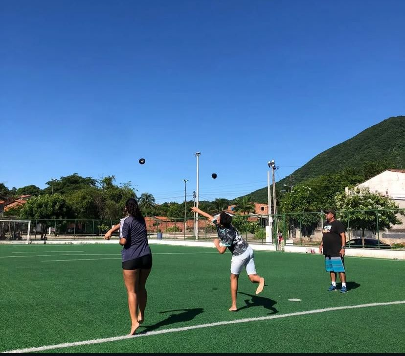
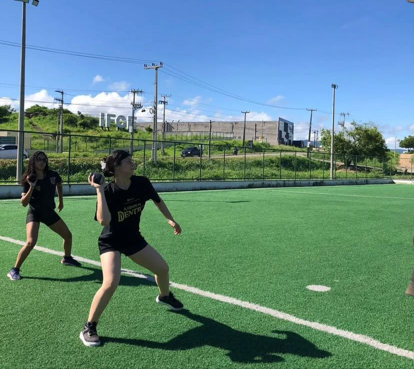

Sobre
 08.58.29_dc1b3e58.jpg)
olá, me chamo Eduardo de lima melo. Possuo doutorado em Educação Física pela Universidade de Brasília. Sou mestre em Políticas Públicas pela Universidade Estadual do Ceará (UECE) e graduado em Educação Física pela Universidade Federal do Ceará (UFC). Além disso, detenho diversas especializações, totalizando ao menos oito qualificações complementares.Sobre minha família, tenho quatro filhos e dois irmãos. Minha mãe já é falecida e meu pai ainda está vivo. Mantemos contato com todos os membros da família. Embora não sejamos uma família numerosa, somos bastante unidos e prezamos pelos nossos vínculos familiares.
Formação Acadêmica
- Graduação: Educação fisica - Universidade Federal do Ceará(UFC)
- Mestrado: Politicas publicas - Estatual do Ceará (UECE)
- Doutorado:Educação física(UnB)
Disciplinas
Educação Física I
Matéria do primeiro semestre (S1)
Educação Física II
Matéria do terceiro semestre (S3)
Hobbies
- 📺 Assistir novelas
- 🎬 Ir ao cinema
- 🏖️ Praia
- 🎭 Teatro
- 🏠 Ficar em casa
- 🎥 Assistir filmes
Curiosidades sobre mim
Uma informação relevante a meu respeito é que venho atuando na área de educação física desde os 18 anos, possuindo formação superior específica nesse campo. Ao longo de minha carreira profissional, dediquei-me exclusivamente à educação física, principalmente em instituições escolares.
projetos acadêmicos
- projetos esportivos
- Formação das equipes esportivas
- Manutenção da cultura esportiva do Campus
Viagens
Em relação às viagens, considero-me uma pessoa que aprecia muito conhecer novos lugares. Tenho o firme propósito de me organizar para realizar uma viagem à Europa nos próximos meses ou anos, uma vez que esse é um desejo antigo que cultivo há bastante tempo.